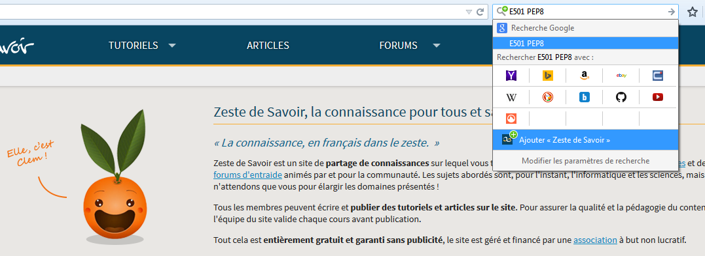

Zeste de Savoir
dev
Guides pas-à-pas
Installation
Contribuer à Zeste de Savoir
Workflow
et détails pratiques
Le
back-end
Documentation technique du
back-end
Le
front-end
API
Makefile et autres outils
Makefile
Raffraichir le nombre de caractère d’un contenu
Anonymisation des +/-1
Paramètrer le moteur de Captcha
Le chargement de jeux de données (fixtures)
Générer les PDFs des différents contenus
Intégration du reformatage du code Python avec Git
Commande de nettoyage des alertes et notifications
Installer un plugin de recherche à votre navigateur
Générer les rapports de release
Selenium
Problème de lenteur lors du dev ?
Zeste de Savoir
»
Makefile et autres outils
»
Installer un plugin de recherche à votre navigateur
Afficher la source de la page
Installer un plugin de recherche à votre navigateur
Vous pouvez installer un plugin de recherche à votre navigateur en deux clics.
